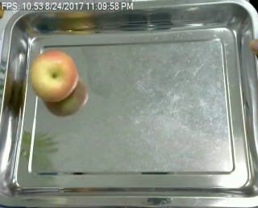

{% extends "base.html" %}
{% block content %}
<h1>This is the predictions page</h1>
<form method=post enctype=multipart/form-data>
    <label for="image">Insert your image: </label>
    <input type="file" name="file">
    <input type="submit" value="Upload">
</form>


<!-- 
<script src="https://unpkg.com/@tensorflow/tfjs@3.7.0/dist/tf.min.js"></script>
<script src="https://unpkg.com/@tensorflow/tfjs-automl@1.2.0/dist/tf-automl.min.js"></script>
<script>
    async function run() {
        const model = await tf.automl.loadImageClassification('model.json');
        const image = document.getElementById('fruit');
        const predictions = await model.classify(image);
        console.log(predictions);
        // Show the resulting object on the page.
        const pre = document.createElement('pre');
        pre.textContent = JSON.stringify(predictions, null, 2);
        document.body.append(pre);
    }
    run();
</script> -->

{% endblock %}